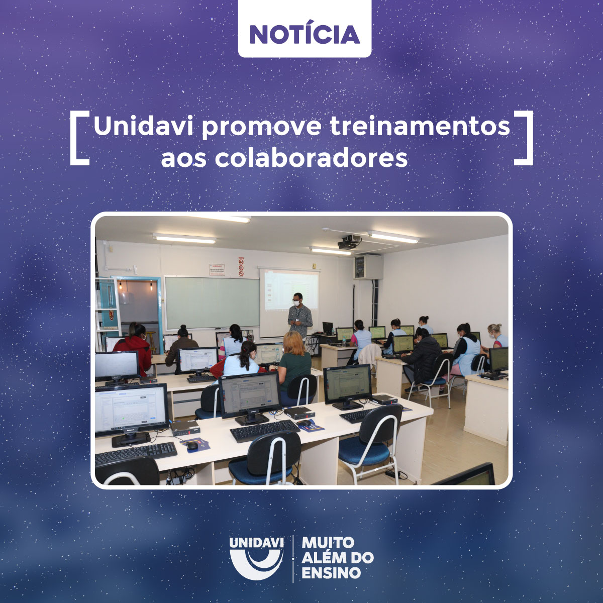

28 de Setembro de 2021
Unidavi promove treinamentos aos colaboradores

Através do Plano Anual de Treinamento e Desenvolvimento, a Unidavi tem promovido cursos externos e internos aos colaboradores, tanto na modalidade presencial, quanto no formato on-line.
Paralelamente, estão ocorrendo o curso de Excel com o Prof. M.e Fernando Andrade Bastos e o Curso de Informática Básica com o Prof. Robson de Jesus. Este segundo treinamento é destinado somente às higienizadoras da Instituição que, com muito carinho, mantêm o ambiente limpo e organizado,. "Separamos um momento só para elas, tendo em vista a dificuldade de terem um tempo entre sua atribulada função para melhorar sua capacitação. Então, escolhemos a área de Tecnologia, observando a necessidade diária de evoluir tecnologicamente", explica o coordenador de Recursos Humanos da Unidavi, Roberto Nagel.